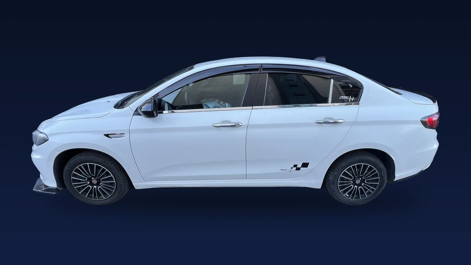
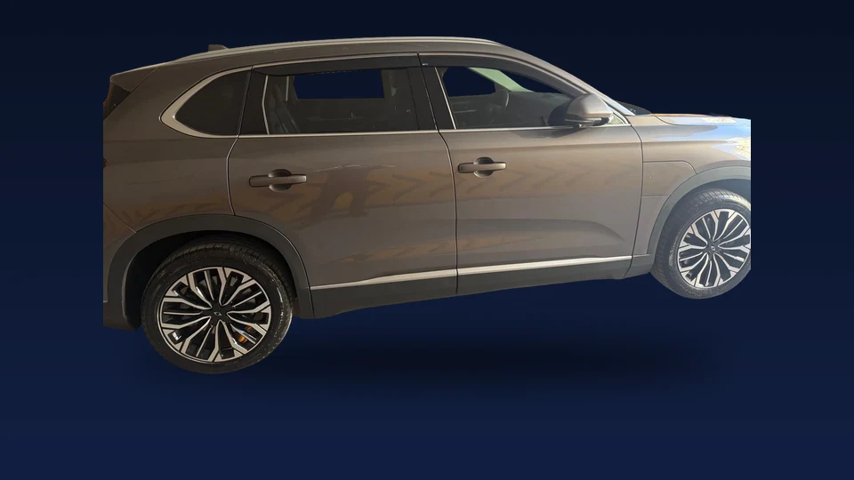

Hangi aracı incelemek istersiniz?
Araç lacivert stüdyonun merkezinde, gerçek fotoğraftan. Seçtikten sonra sağ üstteki "VR'A GİR" düğmesiyle gözlükte açın; cam rüzgarlıklarına 60 cm'e kadar yaklaşabilirsiniz.

Fiat Egea
Sol yan profil · Cam rüzgarlığı

TOGG T10X
Yolcu tarafı yan profil · Cam rüzgarlığı
Meta Quest 3'te: Quest Browser'da bu adresi açın, aracı seçin, sayfa yüklenince "VR'A GİR" düğmesine bakıp tetiğe basın. Bilgisayarda fareyle sürükleyerek bakın, W A S D ile yürüyün.